채널: 써니즈 오디오 | 길이: 20:36 | 날짜: 2025-09-14
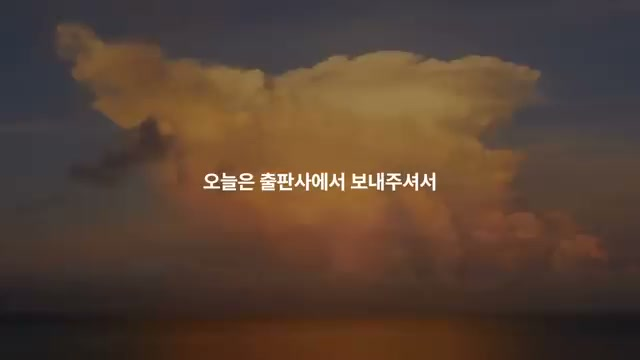
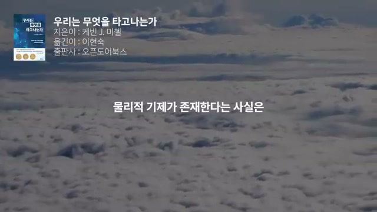
영상은 “부자 유전자”, “깨달음 유전자”처럼 태어날 때 이미 삶의 방향이 정해져 있다는 식의 생각을 먼저 던진 뒤, 반대로 살아가면서 겪는 환경과 경험이 삶을 바꾼다고 믿는지 묻는 방식으로 시작한다. 이 도입은 단순한 흥미 유발이 아니라, 이후 영상 전체를 관통하는 핵심 문제, 즉 타고남과 변화 가능성의 긴장을 압축해서 보여 준다. 진행자는 이번 영상이 출판사에서 미리 보내준 책을 읽고 준비한 내용이며, 책 전체 가운데도 결론에 해당하는 마지막 부분을 읽어 보겠다고 말한다. 즉, 책의 각론을 요약하기보다, 저자가 최종적으로 도달한 관점과 메시지를 추려 전달하려는 구성이다.
책 정보는 구체적으로 제시된다. 제목은 《우리는 무엇을 타고나는가》, 지은이는 케빈 J. 미첼, 옮긴이는 이현숙, 출판사는 오픈도어북스다. 진행자는 이 책을 “나를 나답게 만드는 것이 무엇인지”를 뇌과학, 생물학 관점에서 바라본 책이라고 소개하며, 본문에는 다양한 이론과 연구 사례가 나오지만 오늘은 그중 결론 파트에 집중하겠다고 설명한다. 영상은 처음부터 책 광고라기보다, 책을 발판 삼아 자기계발과 인간 이해를 다시 생각해 보게 하는 독서 해설 형식이다.
시각적으로는 첫 화면이 거대한 구름이 떠 있는 황혼 하늘과 바다 풍경 위에 짧은 문장을 띄우는 형태로 시작된다. 이어지는 화면에서는 좌상단에 푸른색 계열의 책 표지와 함께 저자, 역자, 출판사 정보가 흰 글씨로 정리되고, 화면 중앙에는 현재 읽고 있는 핵심 문장이 크게 배치된다. 책 표지 하단에는 원형의 금색 배지처럼 보이는 마크도 보이며, 전체 화면은 차분한 자연 풍경과 정적인 타이포그래피가 결합된 오디오북식 연출이다. 그래프, 도표, 수식, 코드 같은 정보 화면은 없고, 문장 자체가 시각적 핵심 역할을 한다.
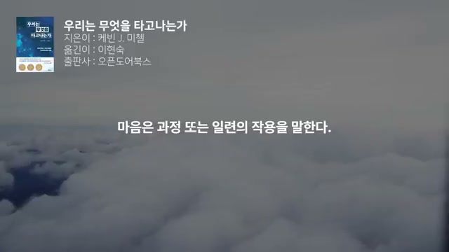
책의 첫 번째 핵심 주장으로 제시되는 것은, 인간의 생각·감정·판단에 물리적 기제가 있다는 사실이 자유의지나 자율성을 위협하지 않는다는 점이다. 영상은 많은 사람이 “마음에 물리적 원인이 있다면 인간은 기계일 뿐이고, 자유의지는 환상이다”라고 생각하지만, 저자는 그 결론을 받아들이지 않는다고 설명한다. 오히려 생각, 감정, 판단을 물리적 기제 없이 설명할 수 있을 것이라고 기대하는 태도 자체가 잘못된 출발점이라고 본다. 이 지점에서 영상은 자유의지 논쟁을 “물질 대 정신”의 낡은 구도로 볼 것이 아니라, 물리적 기반 위에 성립하는 마음과 선택의 문제로 다시 보자고 제안한다.
여기서 비판받는 것은 전형적인 이원론이다. 즉, 뇌와 마음이 본질적으로 구분된 별개의 존재이고, 마음은 비물질적 실체라는 생각이다. 영상은 이 생각이 직관적으로는 익숙하지만, 실제로는 잘못된 생각이며, 한번 빠지면 빠져나오기 쉽지 않다고 못박는다. 핵심은, 자유의지를 지키기 위해 굳이 비물질적 영혼이나 독립된 마음을 상정할 필요가 없다는 것이다.
시각적으로도 이 구간은 자연 풍경 위에 “물리적 기제가 존재한다는 사실은” 같은 짧은 문장을 중앙에 띄우며, 책의 논지를 문장 단위로 압축해 보여 준다. 배경은 높은 고도에서 내려다본 구름 바다로, 논의가 추상적인 철학 문제이면서도 동시에 큰 스케일의 관점 전환을 요구한다는 인상을 준다. 좌상단의 책 정보는 계속 유지되어, 이 모든 논의가 특정 자기계발서가 아니라 학술적 배경이 있는 책의 주장임을 시각적으로 반복 확인시킨다.
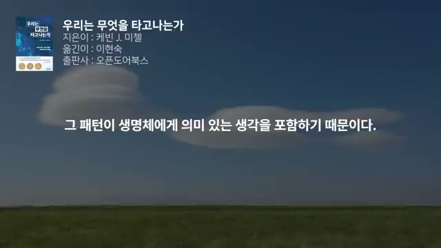
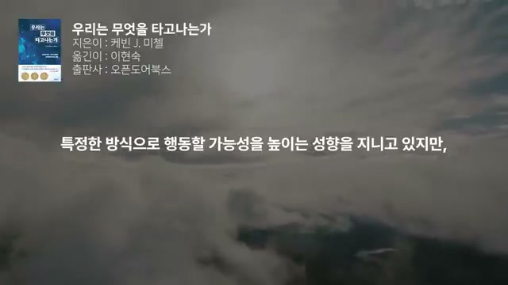
이어서 영상은 “마음이란 무엇인가”에 대해 더 직접적으로 정의한다. 마음은 구체적인 물체가 아니며, 적어도 어떤 종류의 독립된 ‘것’으로 존재하는 실체가 아니라 과정 또는 일련의 작용이라고 말한다. 가장 압축적인 문장은 “작동 중인 뇌 그 자체가 바로 마음”이라는 것이다. 즉, 마음을 뇌와 분리된 다른 무엇으로 놓지 않고, 뇌의 작동을 마음의 실재로 본다.
하지만 여기서 영상은 단순 환원론으로 곧장 떨어지지 않는다. 생각, 감정, 선택이 뇌 안의 분자들이 움직이는 물리적 흐름에 의해 매개된다는 점은 인정하면서도, 그렇다고 그 모든 현상을 오직 분자의 이동만으로 충분히 설명할 수는 없다고 선을 긋는다. 이 말은 물질적 기반을 부정하는 것이 아니라, 물리적 기반 위에서 새로운 수준의 현상이 나타난다는 것을 뜻한다. 즉, 마음은 물리적이지만 단순히 “원자들의 총합”이라고 말하는 순간 놓치는 층위가 있다는 것이다.
이 구간의 시각 정보도 그 메시지를 잘 받쳐 준다. 스크린샷에는 “마음은 과정 또는 일련의 작용을 말한다”, “특정한 방식으로 행동할 가능성을 높이는 성향을 지니고 있지만” 같은 문장이 중앙에 강조되어 있다. 배경은 구름층 위의 회색 하늘, 넓은 들판의 구름, 초원과 하늘 같은 자연 이미지로 바뀌는데, 시각적으로는 복잡한 과학 실험 장면 대신 사유와 명상을 유도하는 여백을 택한다. 이 영상이 설명적 다큐라기보다, 개념을 천천히 되새기게 만드는 오디오 에세이 형식임을 보여 주는 연출이다.
영상은 마음을 설명하면서 창발성(emergence) 개념을 핵심에 놓는다. 생각, 감정, 선택은 단지 뇌 활동의 그림자나 부산물이 아니라, 그 자체로 인과적 힘을 지닌 현상이라고 설명한다. 어떤 신경 활동 패턴이 특정 행동을 유발하는 이유는 그 순간 원자들이 어떻게 충돌했는가 때문이 아니라, 그 패턴이 생명체에게 의미 있는 생각을 담고 있기 때문이다. 원자 하나하나의 세부 움직임은 중요하지 않고, 실제로도 신경계의 위계적 정보처리 과정에서 대부분 사라진다.
따라서 중요한 것은 뉴런 발화 패턴에 담긴 정보의 내용과 그 정보가 그 사람에게 갖는 의미다. 사람이 결정을 내리는 이유는 그 순간의 신경 활동 패턴이 그 사람에게 특정 의미를 띠기 때문이다. 이 설명은 “마음은 물질이냐 비물질이냐”라는 고전 논쟁보다 한 단계 더 올라가, 정보와 의미가 어떻게 인과를 가지는가라는 문제로 시선을 돌린다. 영상은 바로 이 지점에서 자유의지와 물리주의 사이의 모순이 상당 부분 해소된다고 암시한다.
화면에도 이런 요지가 직접 드러난다. “그 패턴이 생명체에게 의미 있는 생각을 포함하기 때문이다”라는 문장이 화면 정중앙에 크게 들어가 있고, 뒤로는 푸른 하늘과 단일한 구름, 넓은 초원이 펼쳐진다. 시각 자료는 도표 대신 문장을 곧바로 전면화함으로써, 청자가 이 구절을 하나의 명제처럼 받아들이게 만든다. 반복되는 자연 영상은 자극적인 정보보다 문장 자체의 무게를 살리는 역할을 한다.
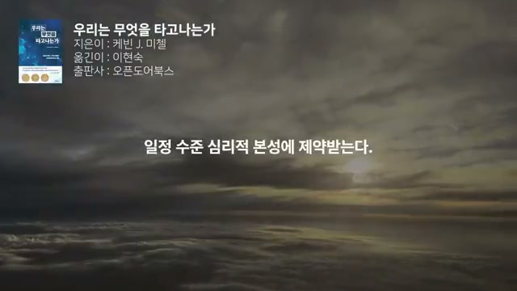
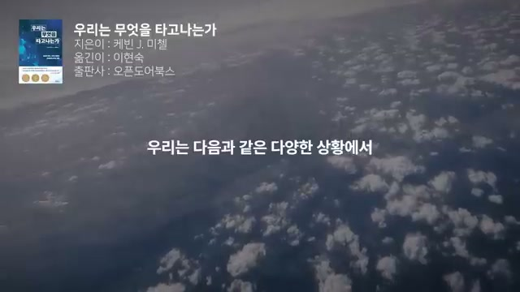
영상은 여기서 자유의지를 보다 현실적으로 정의한다. 인간은 각자 특정 상황에서 특정 행동을 할 가능성을 높이는 성향을 갖고 있지만, 그렇다고 매번 반드시 그렇게 해야 하는 것은 아니라고 말한다. 이 점에서 자유의지는 여전히 남아 있다. 다만 그 자유의지는 “언제든 아무 제약 없이 어떤 행동이든 할 수 있는 무한한 선택권”이 아니다.
보통 인간은 지금까지 생존에 도움이 되었던 습관을 따라 행동하고, 심사숙고한 결정조차도 뇌가 제시하는 제한된 선택지 안에서 이루어진다. 그래서 우리는 완전히 자유롭지 않으며, 일정 수준 심리적 본성의 제약을 받는다. 그런데 진행자는 이 제약을 부정적으로만 보지 않는다. 오히려 그러한 제약이 있어야 시간이 흘러도 일관된 자아가 유지될 수 있으며, 그것이 바로 ‘자신’이라는 존재가 뜻하는 바라고 설명한다.
결과적으로 영상은 자유의지를 “이유 없는 행동”이 아니라, 나름의 이유에 따른 행동으로 재규정한다. 그리고 행동뿐 아니라 그 이유까지 평가된다는 점에서, 실용적 의미의 도덕적 책임도 여전히 성립한다고 말한다. 즉, 자유의지는 사라지지 않았지만, 그 범위와 형태를 과대평가해서도 안 된다는 균형 잡힌 입장이다.
시각적으로는 “일정 수준 심리적 본성에 제약받는다”, “우리는 다음과 같은 다양한 상황에서” 같은 문장이 직접적으로 강조된다. 어둡게 드리운 하늘, 일출 직전의 구름층, 공중에서 내려다본 풍경이 이어지며, 인간의 자유가 전능한 빛이 아니라 제약과 조건 속의 틈새라는 정서를 시각적으로 암시한다.
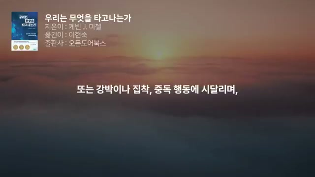
여기서 영상은 다소 도발적인 질문을 꺼낸다. “누군가는 다른 사람보다 자유의지가 더 많을 수 있는가?” 진행자는 자기통제력은 동일하게 분배된 능력이 아니며, 피곤함, 산만함, 수면 부족, 사랑에 빠진 상태, 배고픔, 스트레스, 술 취함 등 여러 조건에서 크게 달라진다고 설명한다. 또한 삶의 흐름 속에서 젊은 시절의 충동성은 나이가 들수록 신중함으로 바뀌기도 한다. 즉, 자유의지와 자기통제는 추상적 능력이 아니라 상태 의존적이고 발달 의존적인 능력이다.
더 나아가 영상은 사람마다 의식적으로 습관적·반사적 행동을 조절하는 메커니즘 자체가 다르다고 말한다. 어떤 사람은 유난히 충동적이고, 어떤 사람은 강박이나 집착, 중독 행동에 시달리며 이를 잘 통제하지 못한다. 정신질환, 조증, 우울증 등도 비슷한 맥락에서 다뤄진다. 그래서 사회와 법은 모든 사람에게 똑같은 완전 책임을 묻지 않으며, 어떤 사람은 다른 사람보다 생물학적 지배를 더 많이 받는 존재라고 볼 수 있다고 주장한다.
이 지점은 영상의 전체 논지에서 매우 중요하다. 자기계발 담론이 전제하는 “누구나 충분히 의지만 가지면 똑같이 달라질 수 있다”는 가정을 깨뜨리기 때문이다. 동시에 이것은 책임을 완전히 없애자는 주장이 아니라, 책임 능력과 자기통제력의 차이를 더 미세하게 봐야 한다는 주장이다.
시각적으로는 “또는 강박이나 집착, 중독 행동에 시달리며,” 같은 문장이 화면 중앙에 커다랗게 뜬다. 해가 지는 붉은 하늘과 안개 낀 풍경이 배경으로 깔리는데, 이는 자기통제력과 책임을 둘러싼 문제의 무게와 어두움을 은근히 강화한다. 그래프나 임상 데이터는 전혀 제시되지 않고, 대신 문장을 전면에 배치해 논점을 직접 밀어붙인다.
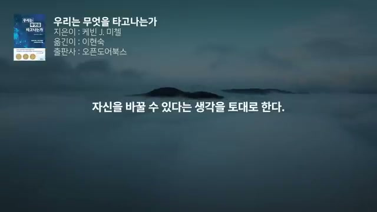
이제 영상은 본격적으로 자기계발 산업을 비판 대상으로 삼는다. 자기계발 산업은 우리가 습관이나 행동뿐 아니라 심지어 성격까지 스스로 바꿀 수 있다는 생각을 토대로 한다고 말한다. 그 안에는 심리치료, 인지행동치료, 마음챙김, 두뇌훈련, 긍정적 사고 같은 접근이 광범위하게 포함된다. 여기에 “최고의 자아가 되는 법”을 약속하는 책, 영상, 세미나, 강의가 시장을 이룬다.
그들이 약속하는 효과도 영상은 구체적으로 열거한다. 성공한 사람의 습관을 배우면 성공할 수 있고, 스트레스와 불안, 부정적 사고, 인간관계 문제, 낮은 자존감을 극복할 수 있으며, 분노를 조절하고 기분을 끌어올리고 오래 꿈꾸던 목표를 이루고 더 행복해질 수 있다고 한다. 어떤 책은 “불안을 극복하고 자신감을 높이도록 뇌를 재배선하는 법”을 알려 준다고 말하고, 다른 책은 “강력한 OO 기법으로 즉각적으로 엄청난 성과를 얻을 수 있다”고까지 주장한다고 꼬집는다. 영상은 이런 약속을 과학적 사실이라기보다 과장된 판매 언어로 본다.
시각적으로는 “자신을 바꿀 수 있다는 생각을 토대로 한다”, “더 행복한 사람이 될 수 있다고 주장하는 것이다” 같은 문장이 중앙에 뜬다. 짙은 안개와 산맥, 구름층 위 일출이 배경으로 깔려, 자기계발 산업의 장밋빛 약속이 마치 장대한 계시처럼 제시되는 효과를 역설적으로 흉내 낸다. 화면의 책 정보는 여전히 남아 있어, 이 비판이 감정적 반감이 아니라 책의 논지를 따라가는 것임을 계속 상기시킨다.
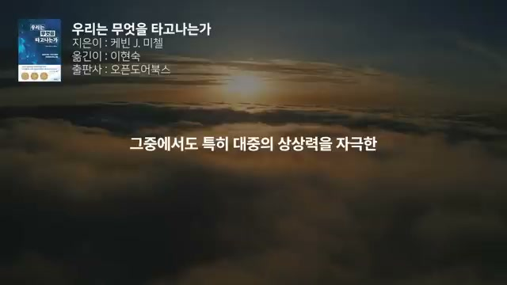
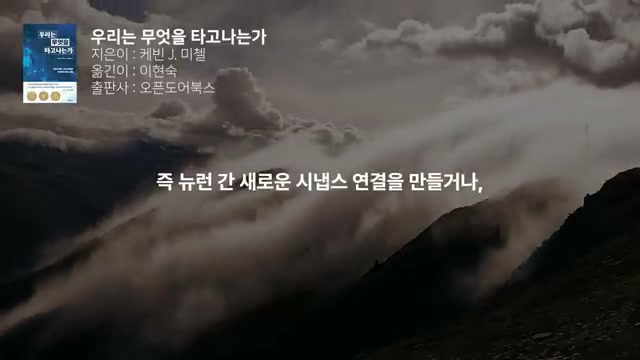
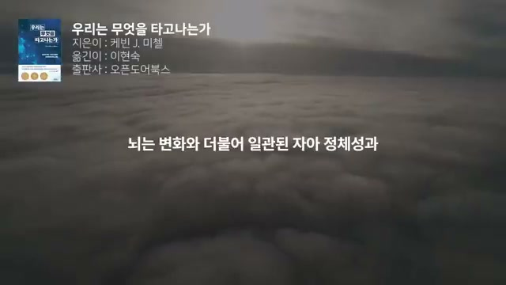
자기계발이 최근 더 설득력 있어 보이는 이유로, 영상은 먼저 신경가소성을 든다. 본래 심리학 중심이던 자기계발 분야에 신경과학의 “획기적 발견”이 접목되면서, 변화 가능성에 과학적 배경이 생긴 듯 보였다는 것이다. 특히 대중의 상상력을 자극한 두 주제 가운데 첫째가 바로 신경가소성이다. 이 개념은 뇌 구조가 미리 배선되어 있다고 해서 고정불변은 아니며, 생각보다 유연하다는 점을 말한다.
하지만 영상은 곧바로 “그러나 그 내용은 어느 정도까지만 사실”이라고 제동을 건다. 뇌에서는 세포 수준의 재배선이 끊임없이 일어나며, 이는 학습과 기억 형성, 경험 기반의 행동 적응을 가능하게 하는 기본 작동 방식이다. 뉴런 사이에 새로운 시냅스 연결을 만들거나 불필요한 연결을 제거하는 것은 놀라운 예외가 아니라 뇌의 일상이다. 심지어 손상 이후에는 훨씬 더 큰 규모의 회로 재배선이 일어나 회복을 돕거나 기능 손실을 보완하기도 하지만, 때로는 추가 문제를 낳기도 한다고 설명한다.
핵심은, 가소성은 존재하지만 무한하지 않다는 점이다. 뇌는 변화와 더불어 일관된 자아 정체성과 구조를 유지해야 하며, 만약 전면적 변화를 끊임없이 겪는다면 우리는 결코 ‘우리 자신’일 수 없다는 것이다. 어린 시절 뇌는 가소성과 반응성이 높지만, 성인이 되면 세포 안팎의 다양한 변화에 의해 의도적으로 억제된다. 인간은 오랜 기간 학습할 수 있을 만큼 충분한 가소성을 유지하지만, 어느 시점 이후에는 변화보다 안정성과 지속성이 더 중요해진다.
이 구간의 화면은 매우 상징적이다. “그중에서도 특히 대중의 상상력을 자극한”, “즉 뉴런 간 새로운 시냅스 연결을 만들거나,”, “뇌는 변화와 더불어 일관된 자아 정체성과” 같은 문장이 각각 화면 중앙에 뜬다. 배경은 높은 산과 흐르는 안개, 구름 위 풍경, 탁 트인 하늘로 이어지며, 거대하고 유연한 자연 풍경이 뇌의 가소성을 연상시키지만 동시에 끝없이 변하지는 않는 안정감을 전달한다. 과학적 다이어그램은 없지만, 반복되는 문장 강조가 사실상 슬라이드 제목 역할을 한다.
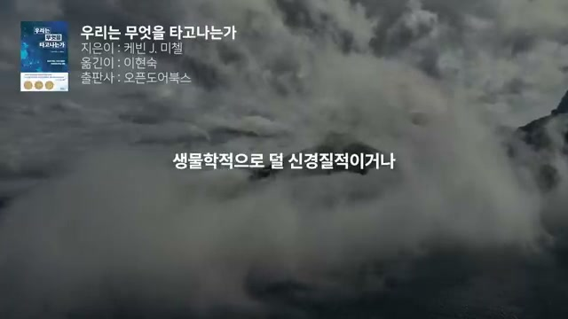
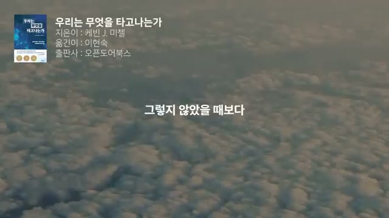
영상은 신경가소성을 인정한 뒤, 그 사실이 곧바로 성격 개조 가능성을 뜻하지는 않는다고 못박는다. 충분한 노력으로 습관을 바꾸고, 중독을 극복하고, 어떤 행동 패턴을 수정하는 것은 가능하며 여러 상황에서 매우 바람직한 목표라고 말한다. 그러나 이것은 어디까지나 행동 수준의 변화이지, 본래의 성격 특성 자체가 대대적으로 뒤바뀌었다는 뜻은 아니다. 사람이 생물학적으로 “더 덜 신경질적이게” 되거나, “더 성실한 사람”으로 재탄생한다는 식의 발상에는 근거가 거의 없다고 지적한다.
영상은 여기서 현실적인 대안을 제시한다. 사람은 자신의 기질을 지운다기보다, 그 기질을 가진 상태에서 더 효과적으로 대처하는 행동 전략을 배울 수 있다. 예를 들어 충동적인 사람이 충동 자체를 소멸시키는 것이 아니라, 충동이 올라올 때 대응하는 방식을 더 잘 익히는 식이다. 그러므로 자기계발의 진짜 가능성은 “새 인간으로의 변신”보다 “현재 성향을 가진 채 더 나은 적응”에 가깝다.
다만 아이들의 경우는 예외 가능성이 좀 더 크다고 말한다. 특정 시기에 집중적인 개입이 발달 경로를 바꿀 여지가 있기 때문이다. 자폐가 있는 아이에게 대화 중 상대 얼굴을 보도록 의식적으로 교육하면, 그렇게 하지 않았을 때보다 언어 및 사회 발달을 더 잘 이끌 수 있다는 예가 제시된다. 그러나 그 경우에도 장기적 변화의 기회는 제한적이며, 선천적 성향뿐 아니라 그 성향이 이미 만들어 놓은 경험과 환경의 연쇄효과까지 함께 넘어야 한다고 강조한다.
시각적으로는 “생물학적으로 덜 신경질적이거나”, “그렇지 않았을 때보다” 같은 문장이 중앙에 뜬다. 특히 이 구간은 책 정보가 좌상단에 여전히 붙어 있지만, 화면 톤이 점차 잿빛 구름과 흐린 하늘로 옮겨 가며 “바꿀 수 있다”는 통념에 제동을 거는 분위기를 시각적으로 강화한다.
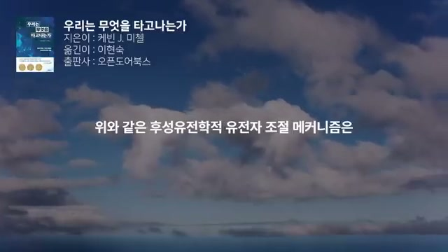
대중의 상상력을 자극한 두 번째 과학 키워드는 후성유전학이다. 영상은 먼저 용어의 뜻을 바로잡는다. 과거에 ‘후성유전’은 개체가 형성되는 발달 과정을 가리키는 의미로 쓰였지만, 현대적 의미에서 후성유전학은 세포가 유전자 발현을 조절하는 분자 수준의 메커니즘을 말한다. 즉, 유전자 자체가 바뀌는 것이 아니라, 어떤 유전자가 언제 얼마나 작동하는지를 조절하는 체계를 가리킨다.
모든 세포는 순간마다 자기 기능에 필요한 일부 유전자만 선택적으로 활성화하고, 나머지는 비활성 상태로 둔다고 설명한다. 그래서 근육세포는 근육 단백질을 만들고, 뼈세포는 뼈 단백질을 만든다. 또한 외부 혹은 내부 환경의 변화에 반응해 어떤 유전자에서 만들어지는 단백질 양을 늘리거나 줄일 수 있다. 이 조절은 일정 시간, 때로는 세포의 생애 전체, 심지어 분열한 딸세포의 생애까지 유지되며, 바로 이런 원리 덕분에 발달 과정에서 서로 다른 세포 유형이 분화될 수 있다.
영상의 요점은 후성유전학 자체를 부정하는 것이 아니라, 그것의 정확한 범위를 이해하자는 데 있다. 세포 수준에서는 매우 중요한 메커니즘이지만, 그것을 곧장 성격이나 심리의 즉각적 재설계와 동일시하는 것은 무리라는 것이다. 과학적 사실의 무게를 인정하면서도, 그 사실이 어디까지 말해 주는지를 세밀하게 나누어 본다.
화면에서는 “위와 같은 후성유전학적 유전자 조절 메커니즘은”, “그런데 유전자 스위치의 활성화나 비활성화를” 같은 문장이 매우 직접적으로 전면에 제시된다. 배경은 푸른 하늘과 구름, 산맥과 안개 풍경으로 구성되며, 세포나 DNA 이미지가 아닌 자연 풍경을 쓰는 점이 오히려 이 영상의 특징이다. 이는 설명용 과학 영상이라기보다, 과학 개념을 인문적 사유 속에 끌어오는 방식에 가깝다.
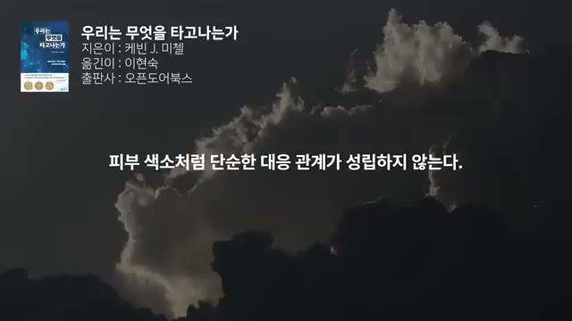
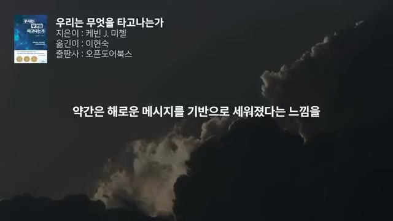
영상은 후성유전학이 자기계발 산업에서 매력적으로 보이는 이유를 설명한다. 그것이 마치 세포의 기억처럼 작동하는 것으로 여겨지기 때문이다. 경험에 따라 유전자의 작동 여부가 바뀌고, 그 변화가 오랫동안 유지된다면, 사람들은 “그렇다면 내 성격도 경험과 훈련으로 유전자 수준에서 바꿀 수 있지 않을까?”라고 생각하기 쉽다. 영상은 სწორედ 이 연결이 문제라고 본다.
단순한 특성에서는 어느 정도 그런 설명이 맞을 수 있다고 인정한다. उदाहरण으로 피부 색소가 제시된다. 햇볕에 피부를 노출하면 색소 생성을 조절하는 유전자에 후성유전적 변화가 생기고, 그 효과가 몇 주 동안 유지될 수 있다는 것이다. 그러나 심리적 특성은 이와 전혀 다르다.
심리적 특성에서는 분자 수준의 유전자 작동과 행동 수준의 특성 발현 사이 연결이 너무 간접적이고, 특이성이 낮고, 매우 복잡한 조합 구조를 이룬다고 말한다. 게다가 심리적 특성의 차이가 대부분 뇌 발달 과정에서 비롯된다면, 성인이 된 뒤 일부 유전자를 약간 조절한다고 해서 성격이 바뀐다는 생각은 훨씬 더 설득력이 떨어진다. 그래서 신경가소성이나 후성유전학이 인간의 심리적 특성을 극적으로 바꿔 주는 마법의 열쇠라는 생각은 사실과 거리가 멀다고 결론 내린다.
시각적으로는 “피부 색소처럼 단순한 대응 관계가 성립하지 않는다”, “약간은 해로운 메시지를 기반으로 세워졌다는 느낌을” 같은 문장이 크고 선명하게 배치된다. 특히 이 무렵부터 화면 배경의 색감이 더 어둡고 묵직한 구름으로 바뀌어, 과학 키워드가 환상적 희망이 아니라 오용될 위험을 가진다는 분위기를 강화한다.
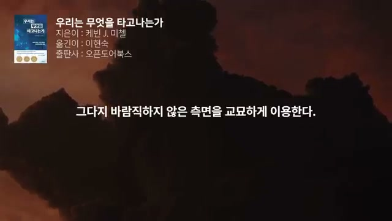
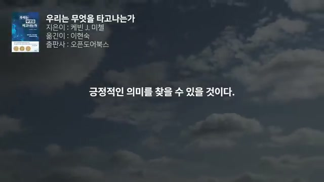
영상 후반의 가장 날카로운 대목은 자기계발 산업에 대한 직접 비판이다. 진행자는 이 산업이 아주 연약하면서도 약간은 해로운 메시지 위에 세워졌다는 느낌을 지울 수 없다고 말한다. 겉보기에는 변화의 가능성을 다루니 긍정적으로 보일 수 있다. 하지만 그 이면에는 “당신은 현재의 모습만으로는 충분하지 않다. 다른 사람들이 당신을 앞서가고 있다. 그러나 우리의 제품이나 강의를 소비하고 긍정적으로 생각하기만 하면 당신도 나아질 수 있다”는 전제가 숨어 있다고 본다.
이 산업은 인간 심리의 그다지 바람직하지 않은 측면을 교묘하게 이용한다고 설명한다. 돈이 더 많은 이웃, 먼저 승진한 직장 동료, 완벽해 보이는 누군가의 삶을 떠올리게 하며 부러움과 비교심리를 자극한다. 또한 주로 불안감이 큰 사람들을 겨냥해 불안, 걱정, 스트레스, 자신감 부족, 낮은 자존감 등을 극복할 수 있다고 주장한다. 결국 상품 판매의 핵심 동력은 “너는 부족하다”는 느낌을 강화하는 데 있다는 것이다.
영상은 이 지점에서 책의 방향이 자기계발과 다르다고 분명히 한다. 이 책은 사람을 고쳐야 할 프로젝트로 보지 않고, 오히려 자기계발서와는 전혀 다른 관점, 즉 있는 그대로의 인간을 이해하고 받아들이는 관점을 보여 준다고 평가한다. 그래서 역설적으로 자기계발서가 아니기 때문에 오히려 더 긍정적 의미를 찾을 수 있다고 말한다.
화면에서는 “그다지 바람직하지 않은 측면을 교묘하게 이용한다”, “긍정적인 의미를 찾을 수 있을 것이다”와 같은 문장이 전면에 뜬다. 하늘과 구름 배경은 계속되지만, 문장 내용이 점점 더 직접적이고 비판적으로 변하면서 영상 전체의 정서도 비판적 명상에서 윤리적 선언 쪽으로 이동한다.
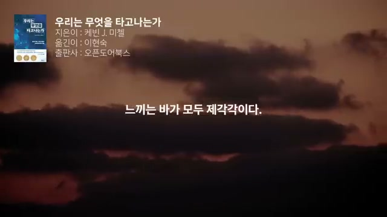
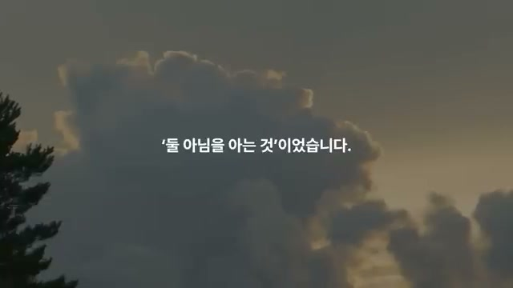
자기계발 비판 다음에 곧바로 제시되는 대안은 수용과 환영이다. 진행자는 사람을 있는 그대로 받아들이는 데서 오는 힘이 있다고 말한다. 그 사람은 친구일 수도, 파트너일 수도, 직장 동료일 수도, 자녀나 형제자매일 수도 있으며, 무엇보다 중요한 것은 나를 있는 그대로 받아들이는 것이라고 강조한다. 즉, 타인을 향한 수용과 자기수용은 분리되지 않는다.
영상은 인간의 차이를 매우 촘촘하게 묘사한다. 사람들은 서로 다르게 태어나고, 그 차이는 계속 이어진다. 누군가는 수줍고, 누군가는 똑똑하고, 누군가는 거칠지만 친절하며, 누군가는 불안하고 충동적이지만 또 근면하고 덤벙대기도 하며, 급한 성격을 가질 수도 있다. 세상을 바라보고, 생각하고, 느끼는 방식은 모두 제각각이다.
어떤 사람은 세상을 쉽게 헤쳐 나가지만, 다른 사람은 세상에 적응하고 주위 사람들과 어울리고 정신을 붙들고 사는 일 자체에 어려움을 겪는다. 이런 차이를 부정한 채 사람들에게 끊임없이 변해야 한다고 말하는 것은 아무에게도 도움이 되지 않는다고 영상은 단언한다. 그래서 필요한 것은 다양성을 단지 “인정”하는 수준을 넘어, 이해하고 받아들이고 환영하는 것이다.
시각적으로 이 구간은 중요한 변화를 보여 준다. “느끼는 바가 모두 제각각이다”라는 문장이 뜨는 마지막 책 중심 화면 이후, “둘 아님을 아는 것” 같은 문장이 나오는 시점부터는 좌상단의 책 정보가 사라지고, 오직 중앙 문장과 자연 풍경만 남는다. 이것은 영상의 초점이 책 해설에서 진행자의 개인적 통찰로 넘어간다는 시각적 신호다.
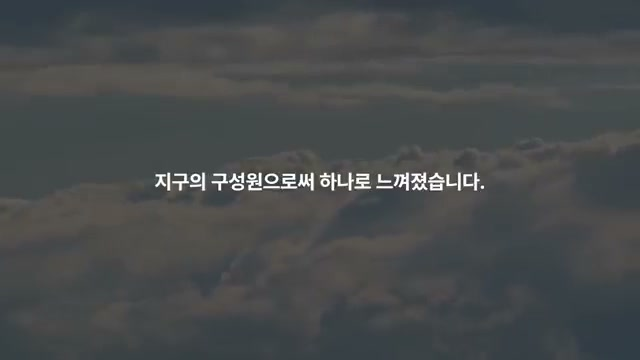
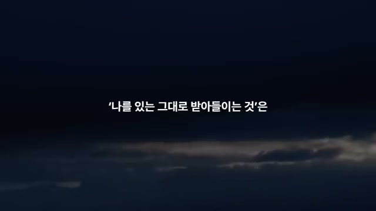
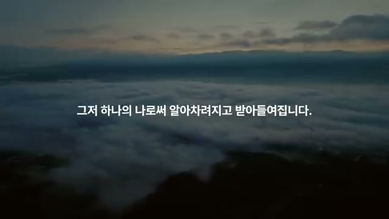
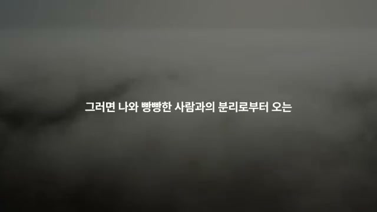
영상의 마지막 부분은 과학적 논의에서 한 걸음 더 나아가, 진행자의 매우 개인적이면서도 철학적인 체험으로 마무리된다. 운전 중 문득 “사랑이란 무엇일까?”라는 질문이 들었고, 거기에 대한 답으로 “둘 아님을 아는 것”이라는 생각이 올라왔다고 말한다. 그 직후 갑자기 끼어드는 차가 있었고, 습관적으로 욕이 튀어나오려는 순간 그 반응을 알아차렸다. 그리고 “끼어든 차와 욕이 튀어나오려는 나, 이 둘은 둘인가 아닌가?”라는 질문을 스스로에게 던진다.
영상은 여기서 두 개의 관점을 구분한다. 욕이 올라오는 나와 동일시된 관점에서는 차와 내가 둘로 나뉘어 있지만, 욕이 올라오는 나와 끼어든 차를 동시에 알아차리는 관점에서는 둘 다 지구 위를 달리는 수많은 운전자 가운데 하나일 뿐이며, 지구의 구성원으로서 하나로 느껴졌다고 말한다. 그러자 “저 차가 내게 끼어든 것”이 아니라 “내가 나에게 끼어든 것”이 되고, “내가 저 차에게 화를 낸 것”이 아니라 “내가 나에게 화를 낸 것”이 되었다고 표현한다. 모두가 각자 맡은 역할을 프로그래밍된 대로 해내고 있었다는 것이다.
이어 그는 이 비유를 한 몸 안의 세포들로 확장한다. 한 몸 안의 다양한 세포가 저마다 역할을 수행하듯, 우리도 저마다의 역할을 수행하고 있다는 것이다. 다만 어떤 것과 동일시될 때는 너와 나로 분리되어 있다고 느끼게 된다. 이 관점에서 책의 메시지인 “나를 있는 그대로 받아들이는 것”은, 타고난 것과 살아오며 겪은 수많은 상황, 변해 가는 몸, 지식, 태도, 감정, 생각, 행동 어느 것도 절대적으로 잘못된 것은 없고, 단지 그것을 잘못되었다고 판단하는 생각이 있을 뿐이라는 통찰로 연결된다.
마지막으로 영상은 “좁은 나”에서 “넓은 나”로의 확장을 말한다. 누군가의 행동은 곧 내가 하는 행동이 되고, 누군가의 말도 곧 내가 하는 말이 되며, 그래서 “저 사람은 절대 이해할 수 없어”라는 생각이 사라지고 그저 하나의 나로서 알아차려지고 받아들여진다고 설명한다. 이때 용서와 사랑도 모두 자기 자신에 대한 태도가 된다. 누군가를 용서하는 것은 곧 나 자신을 용서하는 것이고, 누군가를 사랑하는 것은 곧 나 자신을 사랑하는 것이 된다.
영상은 아주 실용적인 예시로 마무리된다. 뒤에서 누군가가 빵빵 경적을 울리면 “내가 나에게 왜 빵빵 했을까?”라고 한번 생각해 보라고 제안한다. 그러면 나와 경적을 울린 사람 사이의 분리감에서 오는 화, 불안, 스트레스가 훨씬 줄어든다고 말하며, 진행자 자신은 실제로 그랬다고 덧붙인다. 과학서 해설로 출발한 영상이 결국 관계적 자아, 비분리성, 자기수용, 그리고 일상적 분노 완화법으로 귀결되는 셈이다.
시각적으로도 후반부는 매우 상징적이다. 책 표지가 완전히 사라지고, 어두운 하늘과 구름, 광활한 안개 풍경 위에 “둘 아님을 아는 것”, “지구의 구성원으로서 하나로 느껴졌습니다”, “나를 있는 그대로 받아들이는 것은”, “그저 하나의 나로서 알아차려지고 받아들여집니다”, “나와 빵빵한 사람과의 분리로부터 오는…” 같은 문장이 크게 배치된다. 이 변화는 책의 과학적 논의가 진행자 자신의 삶과 통찰 속으로 녹아드는 과정을 시각적으로 보여 준다.
“생각, 감정, 판단에 물리적 기제가 존재한다는 사실은 우리에게 자유의지가 없음을 의미하지 않는다.”
“마음이란 구체적 물체가 아니다. 마음은 과정 또는 일련의 작용을 말한다.”
“작동 중인 뇌 그 자체가 바로 마음이다.”
“중요한 것은 해당 원자가 형성한 뉴런 발화 패턴에 담긴 정보의 내용과 그 정보가 의미하는 바이다.”
“자유의지는 언제든 어떤 제약도 없이 아무 행동이나 선택할 수 있다는 의미는 아니다.”
“결과적으로 자유의지는 행동의 이유가 없는 것이 아니라, 나름의 이유에 따른다는 뜻이다.”
“거대해진 자기계발 산업은 우리가 습관이나 행동, 심지어 성격에 이르기까지 자신을 바꿀 수 있다는 생각을 토대로 한다.”
“뇌의 유연함은 무한하지 않다.”
“행동을 바꾸는 것은 분명 가능하다. 하지만 우리가 성격 특성을 정말로 바꿀 수 있다는 생각을 뒷받침하는 증거는 거의 없다.”
“신경가소성이나 후성유전학이 우리의 심리적 특성을 극적으로 바꿀 마법의 열쇠라는 생각은 사실과 거리가 있다.”
“당신은 현재의 모습만으로는 충분하지 않다.”
“사람을 있는 그대로 받아들이는 데서 오는 힘이 있다.”
“사랑이란 무엇일까? … ‘둘 아님을 아는 것’”
“누군가를 용서한다면, 나 자신을 용서한 것이고, 누군가를 사랑한다면, 나 자신을 사랑한 것이 된다.”
이 영상의 핵심 메시지는 분명하다. 인간은 물리적 뇌를 가진 존재이지만, 그렇다고 자유의지가 사라지는 것은 아니다. 다만 자유의지는 무제한적 능력이 아니라 성향, 습관, 발달, 피로, 질환, 환경 속에서 제한적으로 작동하는 능력이며, 사람마다 그 폭도 다르다. 이 관점은 “누구나 원하면 무엇이든 될 수 있다”는 자기계발 산업의 표어를 정면으로 의심하게 만든다.
실용적 시사점도 선명하다. 습관 교정, 중독 극복, 행동 전략 학습 같은 변화는 가능하고 가치 있다. 하지만 그것을 곧바로 “새로운 성격으로의 재탄생”으로 포장하는 것은 과학적으로도 무리이고, 심리적으로도 해로울 수 있다. 오히려 더 유익한 태도는 자신의 성향을 부정하지 않으면서, 그 성향을 가진 채 어떻게 더 잘 살아갈지 배우는 것이다.
영상은 마지막에 더 급진적인 윤리로 나아간다. 나와 타인을 분리된 존재로만 보면 비교, 분노, 불안이 강화되지만, 둘이 아니라는 관점에서 보면 자기수용과 타인수용은 하나가 된다. 그래서 이 영상은 자기계발의 대안으로 “더 나은 나 되기”가 아니라, 있는 그대로의 나와 타인을 이해하고 받아들이는 넓은 시야를 제안한다. 과학적 설명으로 시작해 존재론적·관계적 통찰로 끝나는 점이, 이 영상을 단순한 책 요약이 아니라 하나의 사유 실험으로 만든다.
댓글
GitHub 이슈 기반 댓글 시스템입니다.